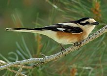
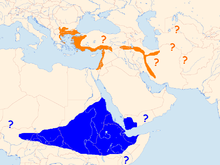
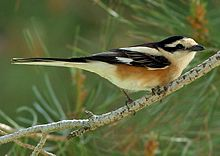
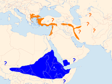

| Masked Shrike | |
|---|---|
|  | |
| Conservation status | |
| Binomial name | |
| Lanius nubicus Lichtenstein, 1823 |
|
|  | |
Summer Winter[1] |
| Masked Shrike | |
|---|---|
|  | |
| Conservation status | |
| Binomial name | |
| Lanius nubicus Lichtenstein, 1823 |
|
|  | |
Summer Winter[1] |
The Masked Shrike, Lanius nubicus, is a member of the shrike family Laniidae. It breeds in southeastern Europe and the eastern end of the Mediterranean, with a separate population in western Iran. It is a common species in Turkey, Cyprus, Israel and Syria. It is migratory, wintering in northeast Africa.
Since this is a short-range migrant, a bird in Scotland in October 2004 was a remarkable example of vagrancy, though a second British record occurred on St. Mary's in the Isles of Scilly in November 2006.
Masked Shrike breeds in open woodland and cultivated country. The nest is built in a tree and 4-7 eggs are laid.
The male Masked Shrike is a striking bird, with black and white plumage and orange flanks. This medium-sized passerine is the smallest shrike at 17-18cm in length. Its upperparts, crown, long tail and wings are mainly black; there are large white patches on the wings which are conspicuous in flight. The face is white except for a broad black line running back from the eye. The rest of the underparts are white with orange flanks.
In the female and young birds the upperparts are dark grey rather than black, and the orange flanks are less bright and reduced in extent. The juvenile has heavily vermiculated grey upperparts, and white underparts which are also vermiculated.
Masked Shrike eats large insects, small birds, voles and lizards which it impales on thorns or barbed wire as a "larder". It sometimes hunts from prominent perches, like other shrikes, but as often from semi-cover.
The song is a somewhat jagged warble.

{kind=link}
{kind=link}